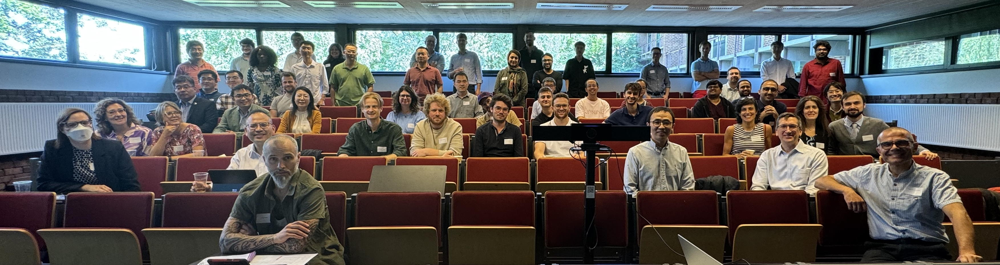

Participants


| Participant | Affiliation |
|---|---|
| Ali Ghojavand | University of Antwerpen, Belgium |
| Alvaro Carrasco Alvarez | Université catholique de Louvain, Belgium |
| Ana Pedro Fontes | Université catholique de Louvain, Belgium |
| Andrew Fowler | Microsoft Research AI for Science |
| Anton Charkin-Gorbulin | Université de Mons, Belgium |
| Ao Wang | Université catholique de Louvain, Belgium |
| Ariadni Boziki | University of Luxemburg, Luxemburg |
| Arsalan Akhtar | Université catholique de Louvain, Belgium |
| Bin Xu | Soochow University, China |
| Claudio Quarti | Université de Mons, Belgium |
| David Waroquiers | Matgenix, Belgium |
| Elham Dehghanpisheh | Université catholique de Louvain, Belgium |
| Enrico Marazzi | Université catholique de Louvain, Belgium |
| Gabriel Taillandier | Matgenix, Belgium |
| Gian-Marco Rignanese | Université catholique de Louvain, Belgium |
| Gilles Frapper (online) | University of Poitiers |
| Giuliana Materzanini | Université catholique de Louvain, Belgium |
| Guillaume Brunin | Matgenix, Belgium |
| Hao Wu | Université catholique de Louvain, Belgium |
| Haochen Yu | Université catholique de Louvain, Belgium |
| Jaemo Lim | Université catholique de Louvain, Belgium |
| Janine George | BAM & University of Jena, Germany |
| Jean-Christophe Charlier | Université catholique de Louvain, Belgium |
| Julien Bouquiaux | Université catholique de Louvain, Belgium |
| Junjie Wang | Northwestern Polytechnical University, Xi'an, China |
| Junwen Yin | Université catholique de Louvain, Belgium |
| Jérôme Müller | Université de Namur, Belgium |
| Luc Henrard | Université de Namur, Belgium |
| Maria Clelia Righi | Universita' di Bologna, Italy |
| Marie Rose Youbi Kemmogne | Université catholique de Louvain, Belgium |
| Matteo Giantomassi | Université catholique de Louvain, Belgium |
| Matthew Evans | Université catholique de Louvain, Belgium |
| Matthieu Verstraete | University of Liège, Belgium |
| Mohammad Bakhsh | Université catholique de Louvain, Belgium |
| Myrta Grüning | Queen's University Belfast, UK |
| Pierre-Paul De Breuck | Ruhr Universität Bochum, Germany |
| Romain Gautier | Institut des Matériaux de Nantes Jean Rouxel, France |
| Samuel Poncé | Université catholique de Louvain, Belgium |
| Sayandeep Ghosh | Université de Mons, Belgium |
| Silvana Botti | Ruhr Universität Bochum, Germany |
| Simon Dubois | Université catholique de Louvain, Belgium |
| Stephan von Malottki | Université catholique de Louvain, Belgium |
| Tathagata Biswas | Université catholique de Louvain, Belgium |
| Victor Trinquet | Université catholique de Louvain, Belgium |
| Wei Chen | Université catholique de Louvain, Belgium |
| Weiguo Jing | Université catholique de Louvain, Belgium |
| Xavier Gonze | Université catholique de Louvain, Belgium |
| Xiyue Cheng | Université catholique de Louvain, Belgium |
| Xue Ma | Soochow University, China |
| Yi Wang | Northwestern Polytechnical University, Xi'an, China |
| Yiming Zhang | Université catholique de Louvain, Belgium |
| Yong Xu | Tsinghua University, China |
| Yousung Jun | Seoul National University, South Korea |
| Zeila Zanolli | Utrecht University, Netherlands |
| Zhe Liu | Northwestern Polytechnical University, Xi'an, China |
| Zhijun Wang | Northwestern Polytechnical University, Xi'an, China |
| Zhiyao Duan | Northwestern Polytechnical University, Xi'an, China |